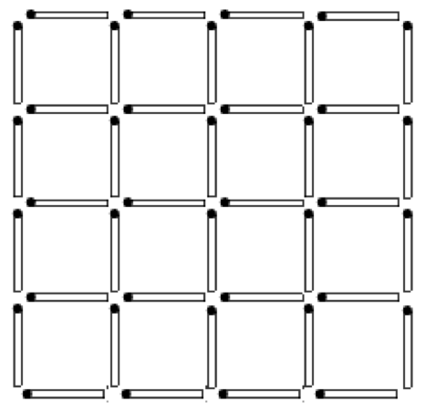

How many squares are shown in the picture?

The picture shows 16 squares with a side of 1 match, 9 squares with a side of 2 matches, 4 squares with a side of 3 matches and 1 square with a side of 4 matches - only 30 squares.
30 squares.